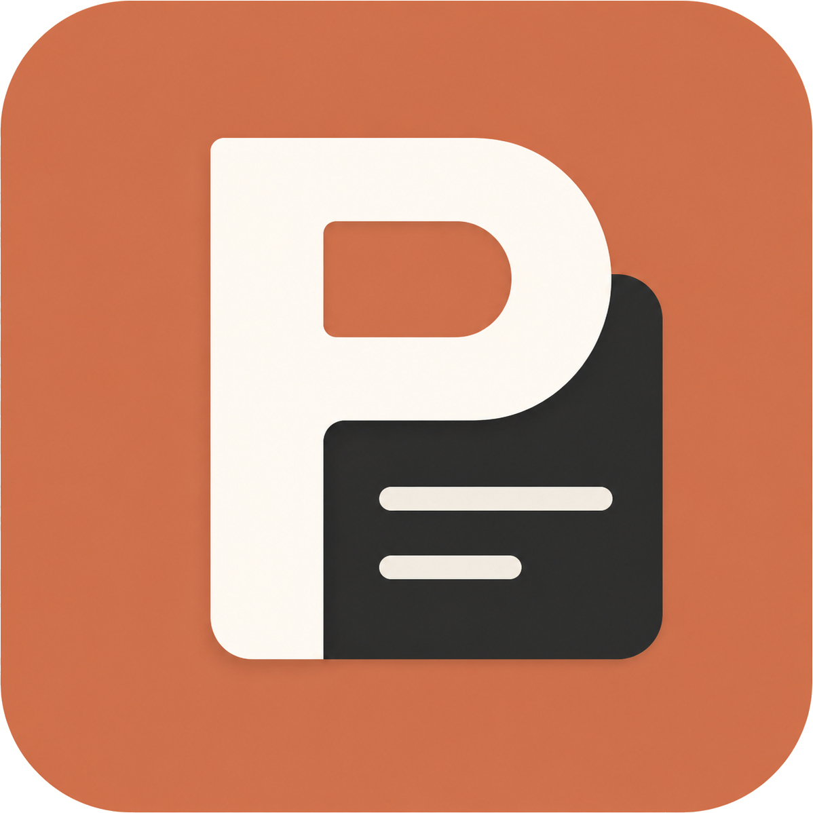

0 个项目
换个关键词，或者新建一个。
在这里预览并快速粘贴。
单击词条复制到剪贴板，也可以组合多个词条后一次复制。
点击左上角“批量添加词条”，一次放入大量词汇或词组。
推荐每行一个关键词，也支持逗号和顿号智能拆分。
会自动去除空白和重复词条；单个词条最多 500 个字符。
修改文字或移动到其他词库。
用分类整理不同用途的词汇和词组。
保存常用内容，之后单击即可粘贴
尚未添加图片
所有使用原标签的 Prompt 都会改用目标标签，并自动去重。
将移动 0 条 Prompt；之后仍可从回收站恢复。
将永久删除 0 个词条；词库分类会继续保留。
将 0 个词条归入另一个词库分类。
只会改变所属分类，收藏、复制次数和内容都会保留。
将永久删除回收站中的 0 条 Prompt。此操作无法撤销，未被使用的图片也会自动清理。
只会移除标签，不会删除 Prompt 和图片。
管理全局唤出和应用内操作快捷键
点击“录制”，然后按下新的组合键。
默认 Ctrl+N，不会影响其他软件的新建快捷键。
`.promptdock` 会包含整个 Prompt 库、词库、标签和全部图片。导入时智能合并并自动去重，不会直接覆盖整个库。
一款安静待在桌面的 Prompt 工具
把常用的想法整理好，需要时，一键取用。
你好，我是皮。
Prompt Dock 最初只是为了解决一个很简单的问题：那些经常使用的 Prompt，不应该每次都重新寻找、整理和输入。
我希望它像一个安静可靠的桌面抽屉——平时不打扰，需要时随手打开，文字、图片和不同版本都已经整理妥当。
如果你遇到问题、有功能建议，或者想交流 Prompt 的使用方式，欢迎扫码添加微信。